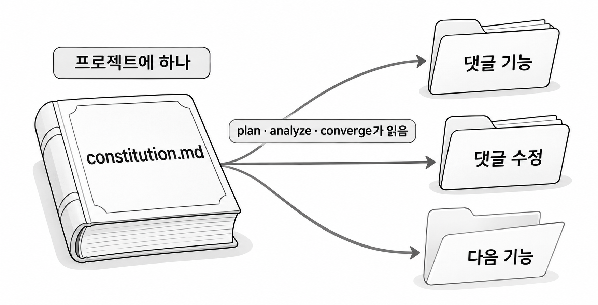

6장. 프로젝트 헌법이란?
1. 헌법의 개념
1.1 constitution의 정의
프로젝트 헌법(constitution)은 프로젝트의 모든 기능에 똑같이 적용되는 규칙을 모아 둔 파일입니다. Spec Kit은 이 파일을 .specify/memory/constitution.md에 둡니다. 5장에서 init을 실행했을 때 이 파일은 빈칸이 있는 틀로 만들어졌습니다. 이 장에서는 그 틀을 우리 프로젝트의 규칙으로 채웁니다.
헌법과 스펙은 다루는 범위가 다릅니다. 스펙은 기능 하나의 요구를 적고, 기능마다 specs 폴더 아래에 새로 생깁니다. 헌법은 프로젝트에 하나만 있고, 어떤 기능을 만들든 지켜야 하는 규칙을 적습니다.
| 구분 | 헌법 | 스펙 |
|---|---|---|
| 개수 | 프로젝트에 하나 | 기능마다 하나 |
| 위치 | .specify/memory/constitution.md | specs/기능폴더/spec.md |
| 적는 것 | 모든 기능이 지킬 규칙 | 이번 기능이 어떻게 동작해야 하는지 |
| 만드는 때 | 첫 기능을 시작하기 전에 한 번 | 기능을 시작할 때마다 |
헌법이라는 이름은 비유입니다. 개별 법률이 헌법에 어긋나면 안 되듯이, 기능마다 쓰는 계획과 코드도 헌법에 어긋나면 안 된다는 뜻을 담고 있습니다.
1.2 헌법이 필요한 이유
2장에서 한 줄 지시로 만든 댓글 코드에서는 컨트롤러가 리포지토리를 직접 호출했습니다. "컨트롤러는 서비스만 호출한다"는 규칙은 댓글 기능에만 해당하지 않습니다. 게시글, 회원, 앞으로 만들 모든 기능에 해당합니다. 이런 규칙을 기능마다 스펙에 다시 적으면 빠뜨리기 쉽고, 스펙마다 문구가 조금씩 달라집니다. 그래서 프로젝트 전체에 걸린 규칙은 헌법 한 곳에 적어 둡니다.
헌법은 2장에서 정한 해결 방향인 "결정을 파일에 적기"를 프로젝트 단위로 적용한 것이기도 합니다. 대화에서 "서비스를 거쳐서 저장하자"고 합의해도 컨텍스트가 압축되면 그 합의가 사라질 수 있습니다. 헌법 파일은 저장소에 남아 있으므로 새 대화에서도 에이전트가 다시 읽습니다.
Spec Kit의 뒤 단계 명령 파일은 헌법을 읽도록 만들어져 있습니다. plan은 설계를 헌법에 비추어 점검하고, analyze와 converge도 헌법을 기준으로 문서와 코드를 확인합니다.

그림 6-1처럼 헌법은 한 번 써 두면 이후의 모든 기능 작업에서 기준이 됩니다. 반대로 헌법이 비어 있으면 에이전트는 기준 없이 업계에서 흔한 구조를 골라 계획을 세웁니다. 2장의 Comment 엔티티와 /comments 주소가 그렇게 나온 결과입니다.
2. 예제 프로젝트의 기존 규칙 파악하기
헌법에 적을 규칙은 새로 지어내지 않습니다. 이 프로젝트가 이미 지키고 있는 방식을 찾아 문장으로 옮깁니다. 5장에서 IntelliJ IDEA로 연 blog 프로젝트를 보며 따라갑니다.
2.1 패키지 구조 살펴보기
예제 프로젝트의 기본 패키지는 com.newtenco.blog입니다. 그 아래는 도메인별 패키지와 공통 코드를 담은 core로 나뉩니다. blog/src/main/java/com/newtenco/blog/ 아래의 패키지와 클래스는 다음과 같습니다.
| 패키지 | 들어 있는 클래스 |
|---|---|
auth | AuthController, AuthRequest, AuthResponse |
board | Board (엔티티만 있음) |
reply | Reply (엔티티만 있음) |
user | User, UserController, UserRepository, UserService |
core | SecurityConfig |
core/filter | JwtAuthorizationFilter |
core/handler | GlobalExceptionHandler, errors/(예외 클래스 4개) |
core/util | JwtUtil, JwtProvider, Resp, RespFilter |
기능이 모두 갖춰진 패키지는 user입니다. 컨트롤러, 서비스, 리포지토리, 엔티티가 한 패키지에 모여 있습니다. 새 기능도 이 모양을 따르면 됩니다. core에는 보안 설정, JWT 필터, 예외 처리, 응답 형식처럼 모든 도메인이 함께 쓰는 코드가 있습니다. 새 기능을 만들 때 core 안의 클래스와 같은 역할을 하는 클래스를 또 만들면 안 됩니다.
2.2 계층 · 응답 · 예외 · 요청과 응답 객체 규칙
user와 auth 패키지의 코드를 읽으면 이 프로젝트가 지키는 방식 네 가지를 찾을 수 있습니다.
| 항목 | 이 프로젝트의 방식 | 확인할 곳 |
|---|---|---|
| 계층 | 컨트롤러는 서비스만 호출하고, 서비스가 리포지토리를 호출한다 | UserController의 필드 |
| 응답 | 성공은 Resp.ok(...)로 감싸서 status, msg, body 형태로 응답한다 | core/util/Resp |
| 예외 | 서비스에서 BadRequestException, UnauthorizedException, ForbiddenException, NotFoundException을 던지고, GlobalExceptionHandler 한 곳에서 응답을 만든다 | core/handler |
| 요청과 응답 객체 | 엔티티를 직접 주고받지 않고, AuthRequest.JoinDTO처럼 도메인별 클래스 안에 record로 둔다 | AuthRequest, AuthResponse |
응답 규칙은 API를 호출해 보면 바로 보입니다. 성공이든 실패든 응답 본문은 status, msg, body 세 필드로 이루어집니다. 다음은 로그인하지 않고 쓰기 요청을 보냈을 때 돌아오는 실패 응답의 모양입니다.
코드 조각
{ "status": 401, "msg": "로그인 후 이용해주세요", "body": null }실패 응답도 이 형태인 이유는 예외 규칙에 있습니다. 서비스가 예외를 던지면 GlobalExceptionHandler가 받아서 같은 형식으로 바꿉니다. 그래서 컨트롤러 안에 try-catch를 둘 필요가 없습니다. 컨트롤러에서 예외를 직접 잡아 응답을 만들면 이 흐름을 건너뛰게 되어 응답 형식이 어긋날 수 있습니다.
이 네 가지 방식은 지금 코드에 이미 들어 있습니다. 하지만 코드에서 읽어 낼 수 있다는 것과 에이전트가 지킨다는 것은 별개입니다. 2장에서 한 줄 지시로 만든 코드가 네 가지를 모두 어긴 것이 그 증거입니다.
2.3 Reply는 있고 BoardRepository는 없다
규칙과 함께 프로젝트의 사실 두 가지도 파악해 둡니다.
첫째, 댓글 엔티티 Reply와 테이블 reply_tb는 이미 있습니다. 댓글 기능을 만들 때 엔티티를 새로 만들 필요가 없다는 뜻입니다. 그런데 에이전트는 이 파일을 찾아 재사용하기보다 새로 만드는 쪽을 고르는 경우가 많습니다. 2장에서 Comment 엔티티가 새로 생긴 이유입니다.
둘째, Board는 엔티티만 있고 BoardRepository는 아직 없습니다. 댓글을 저장하려면 그 댓글이 달릴 게시글이 있는지 확인해야 합니다. 그러려면 게시글을 조회할 리포지토리가 필요합니다.
두 사실은 헌법에 "이미 있는 것을 다시 만들지 않는다"는 조항을 넣어야 하는 근거가 됩니다. 동시에 그 조항이 "새 클래스를 아무것도 만들지 않는다"는 뜻은 아니라는 점도 보여 줍니다. 없는 BoardRepository는 만들어야 하고, 있는 Reply는 다시 만들면 안 됩니다. 이 구분을 제대로 지켰는지는 8장에서 계획을 검토할 때 확인합니다.
3. /speckit-constitution으로 헌법 만들기
3.1 입력할 문장
헌법은 Claude Code의 대화창에 /speckit-constitution 명령과 함께 규칙을 문장으로 적어 만듭니다. 터미널이 아니라 대화창에 입력한다는 점에 주의합니다(5장 6.2).
기본 문법
/speckit-constitution 프로젝트에 적용할 규칙 문장들2절에서 찾은 규칙 네 가지에 테스트 규칙과 금지 조항을 더해 입력합니다. 줄은 읽기 좋게 나눴을 뿐이고, 전체를 메시지 하나로 보냅니다.
예제 6-1 — 블로그 프로젝트 헌법 만들기
파일명: .specify/memory/constitution.md (대화창 입력으로 채워지는 파일)
/speckit-constitution 컨트롤러는 서비스만 호출하고 리포지토리를 직접 호출하지 않는다.
성공 응답은 Resp.ok 로 감싸고, 실패는 core.handler.errors 의 예외를 던져
GlobalExceptionHandler 에서만 응답을 만든다.
엔티티를 요청이나 응답에 직접 쓰지 않고 도메인별 Request, Response 클래스 안의 record 를 쓴다.
새 API 에는 MockMvc 통합 테스트를 성공과 실패 각 1개 이상 작성한다.
build.gradle 에 의존성을 추가하지 않는다. 이미 있는 엔티티와 클래스를 다시 만들지 않는다.실행 결과
에이전트가 .specify/memory/constitution.md의 틀을 읽고 빈칸을 채운 뒤 파일을 고쳐도 되는지 묻습니다. 1장 3.1에서 배운 대로 대상 파일이 constitution.md 하나인지 확인하고 승인합니다. 작업이 끝나면 대화창에 요약이 나옵니다. 요약에는 헌법 버전, 직접 채워야 할 항목, 다음에 실행할 명령 등이 들어 있습니다. 요약의 항목과 문구는 버전에 따라 다를 수 있습니다 [확인 필요].
입력 문장에 한 가지 일만 시켰다는 점도 눈여겨봅니다. constitution 명령은 헌법 파일만 고치도록 만들어져 있습니다. 같은 메시지에 "댓글 기능도 만들어 줘"를 섞으면 그 요청은 실행되지 않거나 뒤로 미뤄집니다. 기능 요구는 7장의 specify에서 따로 입력합니다.
헌법은 프로젝트에서 한 번 만들고, 규칙이 바뀔 때만 명령을 다시 실행합니다. 다시 실행하면 에이전트가 기존 헌법을 읽고 그 내용을 고칩니다.
3.2 생성된 constitution.md 읽기
IntelliJ IDEA에서 .specify/memory/constitution.md를 엽니다. 핵심 부분은 다음과 같습니다. 실제 파일은 템플릿 형식을 따르므로 이보다 길고 제목과 문구도 다릅니다.
코드 조각
# 블로그 프로젝트 헌법
## 1. 계층 구조
컨트롤러는 서비스만 호출한다. 컨트롤러에서 리포지토리를 직접 호출하지 않는다.
## 2. 응답과 예외
성공 응답은 Resp.ok 로 감싼다.
실패는 core.handler.errors 패키지의 예외를 던지고, 응답은 GlobalExceptionHandler 한 곳에서만 만든다.
컨트롤러 메서드 안에 try-catch 를 두지 않는다.
## 3. 요청과 응답 객체
엔티티를 요청 본문이나 응답 본문에 직접 쓰지 않는다.
도메인별 XxxRequest, XxxResponse 클래스 안에 record 로 정의한다.
## 4. 테스트
새 API 마다 MockMvc 통합 테스트를 성공 1개, 실패 1개 이상 작성한다.
실패하는 테스트가 하나라도 있으면 작업을 완료로 표시하지 않는다.
## 5. 금지
build.gradle 에 의존성을 추가하지 않는다.
이미 있는 엔티티, 예외 클래스, 유틸 클래스와 같은 역할의 클래스를 새로 만들지 않는다.
SecurityConfig 의 URL 접근 규칙을 바꾸지 않는다.입력한 문장과 비교하면 에이전트가 보탠 문장이 있습니다. 2조의 "컨트롤러 메서드 안에 try-catch를 두지 않는다", 4조의 "실패하는 테스트가 있으면 완료로 표시하지 않는다", 5조의 SecurityConfig 조항입니다. 세 문장 모두 2절에서 확인한 이 프로젝트의 방식과 맞으므로 남겨 둡니다. 보탠 문장이 프로젝트와 맞지 않으면 파일을 직접 고치거나 명령을 다시 실행해 고칩니다. 헌법은 에이전트가 초안을 쓰고 사람이 확정하는 문서입니다.
헌법에는 규칙 말고 관리용 정보도 들어갑니다. 템플릿에는 헌법의 버전, 처음 정한 날짜, 마지막으로 고친 날짜를 적는 자리가 있습니다. 조항을 고칠 때마다 에이전트가 버전을 올리고, 파일 맨 위에 무엇이 바뀌었는지 적은 주석을 남기기도 합니다. 이 정보 덕분에 헌법이 언제 어떻게 바뀌었는지 커밋 기록과 함께 추적할 수 있습니다. 항목의 정확한 이름과 형식은 템플릿 버전에 따라 다릅니다 [확인 필요].
파일을 확인했으면 도입용 브랜치에 커밋합니다. 헌법도 코드처럼 리뷰하고 이력을 남기는 대상입니다.
4. 좋은 조항의 조건
4.1 판별할 수 있는 문장
좋은 조항은 코드를 보고 지켰는지 어겼는지 판별할 수 있는 문장입니다. 판별할 수 없는 조항은 에이전트가 어떤 코드를 쓰든 "지켰다"고 보고할 수 있어서 기준 역할을 하지 못합니다. 사람이 리뷰할 때도 근거로 쓸 수 없습니다.
| 조항 | 판별할 수 있는가 | 이유 |
|---|---|---|
| 코드를 깨끗하게 작성한다 | 없다 | 어떤 코드를 놓고도 지켰다고 말할 수 있다 |
| 컨트롤러에서 리포지토리를 직접 호출하지 않는다 | 있다 | 컨트롤러의 필드와 메서드 호출을 보면 바로 알 수 있다 |
| 예외를 적절히 처리한다 | 없다 | 적절하다는 기준이 없다 |
| 컨트롤러 메서드 안에 try-catch를 두지 않는다 | 있다 | 코드에서 try-catch를 찾으면 된다 |
판별할 수 없는 조항을 고칠 때는 그 조항을 쓴 사람이 실제로 원한 동작이 무엇인지 묻습니다. "예외를 적절히 처리한다"고 쓴 사람이 원한 것은 아마 "실패 응답이 모두 같은 형식으로 나간다"일 것입니다. 이 프로젝트에서 그 형식을 만드는 방법은 core.handler.errors의 예외를 던지고 GlobalExceptionHandler가 응답을 만드는 것입니다. 이 방법을 그대로 적은 것이 헌법 2조입니다.
"깨끗하게", "적절히", "충분히", "가능하면" 같은 말이 보이면 판별할 수 없는 조항일 가능성이 큽니다. 클래스 이름, 패키지 이름, 개수처럼 코드에서 찾을 수 있는 말로 바꿉니다.
4.2 금지 조항
헌법에는 지킬 것뿐 아니라 하지 말아야 할 것도 적습니다. 에이전트는 기존 코드를 찾아 재사용하기보다 새로 만드는 쪽을 고르는 경향이 있습니다. 명시적으로 막지 않으면 업계에서 흔한 구조를 프로젝트에 새로 들여옵니다. 2장에서 본 다섯 가지 문제 가운데 Comment 엔티티와 /comments 주소가 이런 경우입니다.
헌법 5조는 금지 조항을 모아 둔 조항입니다. 각 조항이 막는 일은 다음과 같습니다.
| 금지 조항 | 막는 일 |
|---|---|
| build.gradle에 의존성을 추가하지 않는다 | 이미 쓰는 기술 대신 새 라이브러리를 들여오는 일 |
| 이미 있는 엔티티 · 예외 · 유틸 클래스와 같은 역할의 클래스를 새로 만들지 않는다 | Reply가 있는데 Comment를 만들거나, Resp가 있는데 새 응답 클래스를 만드는 일 |
| SecurityConfig의 URL 접근 규칙을 바꾸지 않는다 | 새 주소가 막히자 보안 규칙을 풀어서 해결하는 일 |
마지막 조항은 2장의 다섯 번째 문제와 관련이 있습니다. /comments 주소가 SecurityConfig 규칙에 걸려 막혔을 때 에이전트가 고를 수 있는 길은 두 가지입니다. 주소를 기존 규칙에 맞게 바꾸거나, 보안 규칙을 고쳐서 새 주소를 열어 주는 것입니다. 금지 조항이 없으면 뒤쪽을 고를 수도 있습니다. 보안 규칙을 바꾸면 다른 기능의 접근 권한까지 달라질 수 있으므로 미리 막아 둡니다.
금지 조항도 판별할 수 있어야 합니다. "불필요한 의존성을 추가하지 않는다"로는 무엇이 불필요한지 판별할 수 없습니다. "build.gradle에 의존성을 추가하지 않는다"는 build.gradle의 변경 내역만 보면 판별할 수 있습니다.
헌법은 짧게 유지합니다. 조항이 많아지면 에이전트가 읽을 글이 늘어나고, 정말 중요한 조항이 다른 조항 사이에 묻힙니다. 2절처럼 이 프로젝트에서 실제로 어긴 적이 있거나 어기기 쉬운 규칙부터 적습니다. 헌법을 계속 짧게 관리하는 방법은 12장에서 다룹니다.
4.3 헌법은 강제 장치가 아니다 — 테스트와 CI
헌법을 지켰는지는 결국 에이전트가 스스로 판단합니다. 헌법 파일이 있어도 헌법을 어긴 코드는 만들어질 수 있습니다. 에이전트가 조항을 빠뜨리고 읽거나 잘못 해석하면 어긴 코드가 그대로 나옵니다. 헌법은 에이전트에게 주는 강한 지침이지만, 컴파일러처럼 잘못된 코드를 막아 주는 장치는 아닙니다.
그래서 반드시 지켜야 하는 규칙은 테스트나 CI 같은 자동 검사에도 걸어 둡니다. CI(Continuous Integration, 지속적 통합)는 코드를 저장소에 올릴 때마다 빌드와 테스트를 자동으로 실행하는 방식입니다. 예를 들어 헌법 4조는 CI에 걸어서 .\gradlew test가 실패하면 풀 리퀘스트를 병합하지 못하게 할 수 있습니다. GitHub Actions를 쓴다면 다음과 같은 설정으로 시작합니다.
코드 조각
name: test
on: pull_request
jobs:
test:
runs-on: ubuntu-latest
steps:
- uses: actions/checkout@v4
- uses: actions/setup-java@v4
with:
distribution: temurin
java-version: '21'
- run: chmod +x gradlew && ./gradlew testCI 서버는 Linux에서 실행되므로 PowerShell의 .\gradlew 대신 ./gradlew로 씁니다. 이 설정에 저장소의 브랜치 보호 규칙을 더해야 테스트가 실패한 풀 리퀘스트의 병합이 실제로 막힙니다. 액션 버전과 설정 방법은 쓰는 시점의 GitHub 문서로 확인합니다 [확인 필요].
모든 조항을 자동 검사로 만들 수는 없습니다. 이 프로젝트에서 헌법 조항과 검사 수단은 다음처럼 짝지어집니다.
| 헌법 조항 | 지키는 수단 |
|---|---|
| 4조 테스트 | CI에서 ./gradlew test 실패 시 병합 차단 |
| 5조 build.gradle 금지 | 풀 리퀘스트에서 build.gradle 변경 여부 확인 |
| 1조 · 2조 · 3조 | 사람의 코드 리뷰 |
1조 같은 계층 규칙도 아키텍처 검사 라이브러리로 테스트할 수 있습니다. 하지만 그러려면 build.gradle에 의존성을 추가해야 하므로 지금의 헌법 5조와 부딪힙니다. 이런 선택은 팀이 헌법을 고쳐서 정합니다. 에이전트가 기능을 만드는 김에 라이브러리를 들여오게 두지 않습니다. 사람이 조항별로 코드를 리뷰하는 방법은 9장에서 다룹니다.
5. 연습문제 — 판별할 수 없는 조항 고치기
다음은 어느 팀이 처음 쓴 헌법 초안입니다. 이대로는 에이전트도 리뷰어도 지켰는지 판별할 수 없습니다.
코드 조각
## 1. 계층 구조
계층을 잘 나누어 작성한다.
## 2. 응답과 예외
응답 형식을 통일하고 예외를 적절히 처리한다.
## 3. 테스트
테스트를 충분히 작성한다.
## 4. 금지
불필요한 라이브러리나 중복 코드를 만들지 않는다.요구사항
- 네 조항에서 판별할 수 없게 만드는 말을 찾아 표시합니다.
- 2절에서 파악한 예제 프로젝트의 규칙을 근거로 네 조항을 판별할 수 있는 문장으로 고칩니다.
- 4조는 "하지 않는다"로 끝나는 금지 조항으로 쓰고, 2.3의 Reply와 BoardRepository 상황을 함께 고려합니다.
- 고친 조항마다 코드의 어느 곳을 보면 판별할 수 있는지 한 줄씩 적습니다.
- 고친 조항 가운데 테스트나 CI로 검사할 수 있는 것을 하나 고르고, 어떤 방법으로 검사할지 적습니다.
완료 조건
- "잘", "적절히", "충분히", "불필요한" 같은 말이 조항에 남아 있지 않습니다.
- 모든 조항에 클래스 이름, 패키지 이름, 파일 이름, 개수 가운데 하나 이상이 들어 있습니다.
- 4조를 따라도
BoardRepository는 만들 수 있고,Reply와 같은 역할의 엔티티는 만들 수 없습니다. - 4번 요구사항의 확인 위치만 보고 다른 사람이 지켰는지 어겼는지 같은 판단을 내릴 수 있습니다.